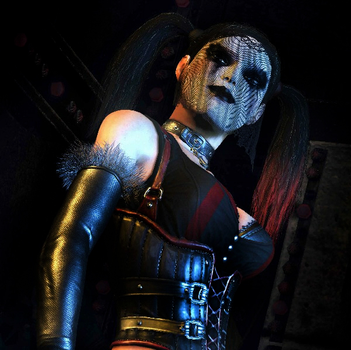
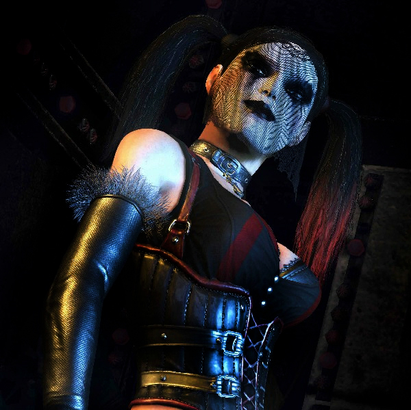

La doctora Harleen Frances Quinzel era una psiquiatra del asilo Arkham cuando se enamoró del Joker, le ayudó a escapar y se convirtió en la villana Harley Quinn.
El origen de Harley Quinn en los cómics, revelado en Batman: Harley Quinn dentro de la saga "Tierra de Nadie" (1999), es una adaptación de su origen en la novela gráfica Mad Love. A partir de entonces ha sido un personaje recurrente en las historias de Batman e incluso le fue dada su propia serie. La serie mensual llamada Harley Quinn fue publicada por DC Comics llegando a 38 números entre 2001 y 2003. La saga Harley Quinn termina con Harley volviendo al Asilo Arkham.